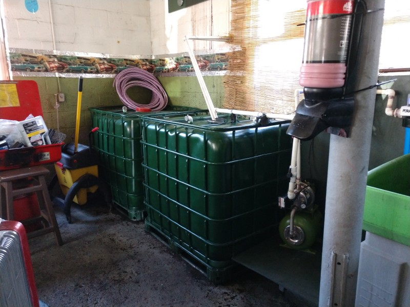

April 9, 2018
Rainwater – Problem or Opportunity?

Problem or opportunity? When it comes to water, solving “problems” can create opportunities. Take rainwater, for instance. Deluges erode soil and nutrients into areas waterways, flood roads and basements, and undermine critical infrastructure. Problem, right?
But rainfall is also an opportunity. Capturing it for later use not only reduces the “problem” aspects of rain, but also offers up a free source of water that can be used for irrigation and equipment cleaning. With the addition of filtration and an ultraviolet light to kill water-borne pathogens, the water can even be used for indoor plumbing.
Tyrone Jarvis of Go Green Auto Care in Newport News, Virginia plumbed his auto shop so that it can do just that: capture water for his business’ use while also reducing stormwater runoff from his business. What can Virginia’s “water warrior” inspire you do to? Even a simple bucket beneath a gutter is a great place to start.